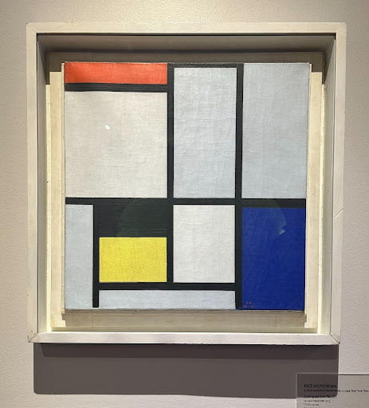
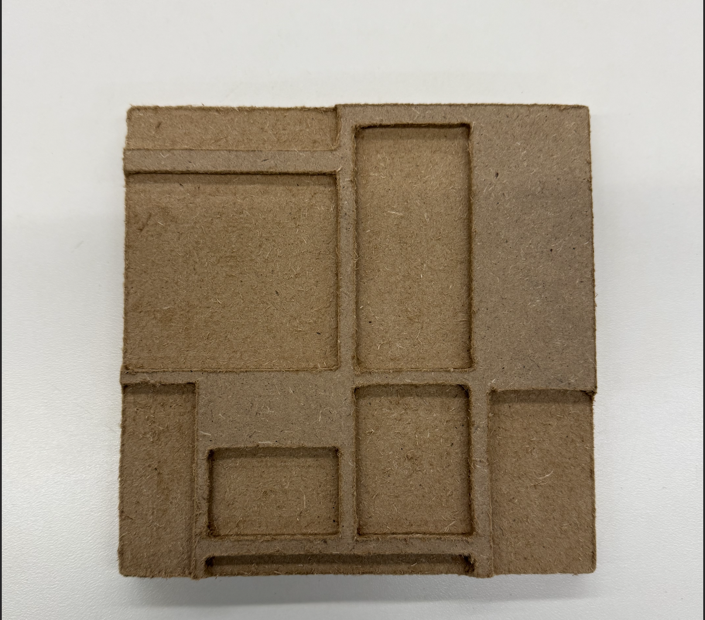
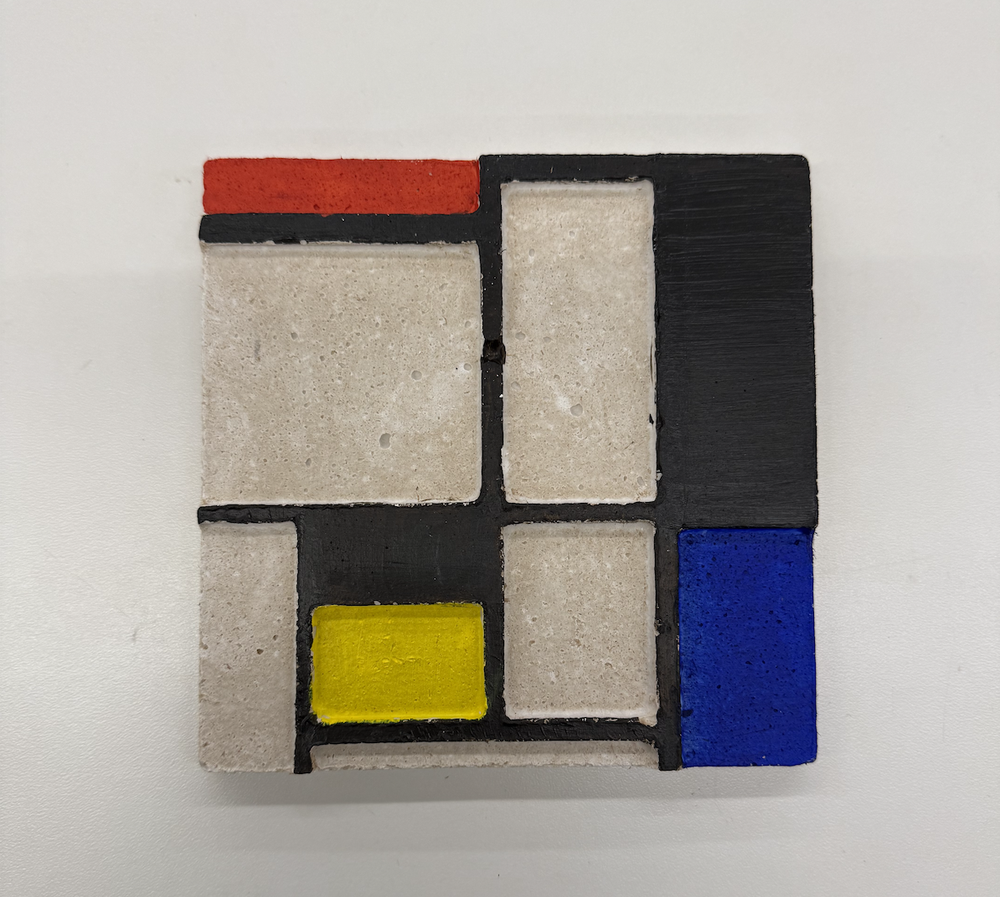

Week 8: CNC Milling
Background
I was excited this week to create a Tactile Piet Mondrian painting. I replicated the Mondrian from the Harvard Art museum, shopbot cut it and then made a mold with plaster and painted. Because Mondrian was a deconstructionist who wanted to break down the concepts of art, I was excited to honor him this week by creating a piece that can be touched.
ShopBot


I inserted the photo of the Mondrian into Fusion360 and traced over it, before exporting it and uploading it to the ShopBot.
Vaccum Seal and Mold


I vacuum formed the ShopBot output and filled it with plaster. I let it sit for a day before coming back and painting the project.